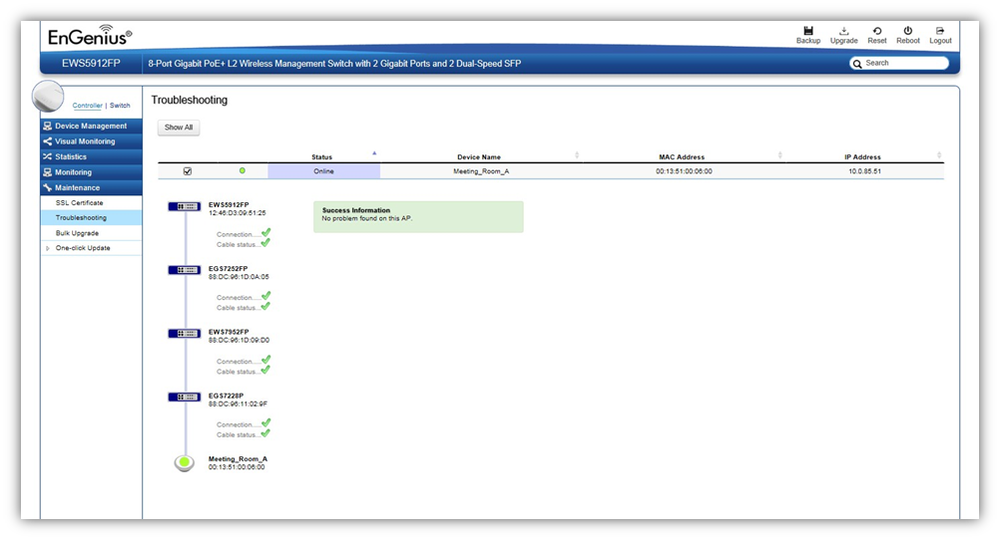

Maintenance > Troubleshooting
From here, you can troubleshoot any issues you have with Access Points connected to the network. This feature is designed primarily for administrators to verify and test the link route between the Switch and the Access Point. A troubleshooting solution is provided by the system so that administrators can know where the problem lies. Note that the topology of the network needs to be saved for this function to work properly.

Choosing an Access Point to Diagnose
A list will show the current status of Access Points on the network. Select an Access Point to begin a diagnostic test. If multiple Access Points are connected, use the
search bar to the top right of the page to find the Access Point you wish to troubleshoot. The controller will run a diagnostic test for the selected Access Point. Click Start to run the test. The test take a few seconds to complete. Afterwards, the results will display on the page.
Created with the Personal Edition of HelpNDoc: Free CHM Help documentation generator